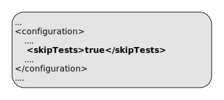

Cloud Software Group, Inc.
Cloud Software Group, Inc.ep:install-product
Full name:
com.tibco.ep:ep-maven-plugin:2.3.0:install-product
Description:
Install product zip and tgz artifacts if not already installed.
This goal scans through the project dependencies and if a product zip or tgz artifact is not installed, it is installed into the $TIBCO_EP_HOME directory.
Dependencies with scope provided are skipped.
A markersDirectory is used to track if the artifact has already been installed - hence manually removing this directory will cause the artifacts to be re-installed. This directory is only created if there is a need to install an artifact.
To detect a manual installation of the product, a file specified by productValidationFile is used. If this file exists, then the product installation is not attempted.
If the plugin does install a zip, then an md5 sum of the original zip is saved - this allows installation of a newer version of the zip at a later time. This can happen with SNAPSHOTS.
Attributes:
- Requires a Maven project to be executed.
- The goal is thread-safe and supports parallel builds.
- Binds by default to the lifecycle phase:
validate.
Optional Parameters
| Name | Type | Since | Description |
|---|---|---|---|
<dtmProductValidationFile> |
String |
1.0.0 |
File to check if DTM product has been installed externally - if this exists, then product installation is not attempted. Relative to productHome. Example use in pom.xml: Default: distrib/tibco/dtm/deploy/dtm.kds |
<dtmSupportValidationFile> |
String |
1.2.0 |
File to check if DTM support has been installed externally - if this exists, then support installation is not attempted. Relative to productHome. Example use in pom.xml: Default: distrib/tibco/devbin/epadmin |
<ignoreLeaks> |
String[] |
1.3.0 |
List of class names to ignore in leak detection. This is processed to a CSV value to include in unit testing and in jar manifest file. Example use in pom.xml:  |
<markersDirectory> |
String |
1.0.0 |
Directory to store flag files. Relative to productHome. Example use in pom.xml: Default: dependency-maven-plugin-markers |
<productHome> |
File |
1.0.0 |
Product home location. This path is resolved in the following way :
Example use in pom.xml: 
Example use on commandline:  User Property: com.tibco.ep.ep-maven.product |
<sbProductValidationFile> |
String |
1.0.0 |
File to check if SB product has been installed externally - if this exists, then product installation is not attempted. Relative to productHome. Example use in pom.xml: Default: distrib/tibco/sb/deploy/sb.kds |
<skipTests> |
boolean |
1.0.0 |
Set this to 'true' to skip running tests, but still compile them. Example use in pom.xml: Example use on commandline:  Default: falseUser Property: skipTests |
Parameter Details
<dtmProductValidationFile>
File to check if DTM product has been installed externally - if this exists, then product installation is not attempted.
Relative to productHome.
Example use in pom.xml:
- Type:
java.lang.String - Since:
1.0.0 - Required:
No - Default:
distrib/tibco/dtm/deploy/dtm.kds
<dtmSupportValidationFile>
File to check if DTM support has been installed externally - if this exists, then support installation is not attempted.
Relative to productHome.
Example use in pom.xml:
- Type:
java.lang.String - Since:
1.2.0 - Required:
No - Default:
distrib/tibco/devbin/epadmin
<ignoreLeaks>
List of class names to ignore in leak detection. This is processed to a CSV value to include in unit testing and in jar manifest file.
Example use in pom.xml:
- Type:
java.lang.String[] - Since:
1.3.0 - Required:
No
<markersDirectory>
Directory to store flag files.
Relative to productHome.
Example use in pom.xml:
- Type:
java.lang.String - Since:
1.0.0 - Required:
No - Default:
dependency-maven-plugin-markers
<productHome>
Product home location. This path is resolved in the following way :
- If property com.tibco.ep.ep-maven.product is set, use that, else
- If environment variable TIBCO_EP_HOME is set, use that, else
- Use localrepository/../product-group/product-artifact/product-version (so default is ~/.m2/product-group/product-artifact/product-version)
Example use in pom.xml:
Example use on commandline:
- Type:
java.io.File - Since:
1.0.0 - Required:
No - User Property:
com.tibco.ep.ep-maven.product
<sbProductValidationFile>
File to check if SB product has been installed externally - if this exists, then product installation is not attempted.
Relative to productHome.
Example use in pom.xml:
- Type:
java.lang.String - Since:
1.0.0 - Required:
No - Default:
distrib/tibco/sb/deploy/sb.kds
<skipTests>
Set this to 'true' to skip running tests, but still compile them.
Example use in pom.xml:
Example use on commandline:
- Type:
boolean - Since:
1.0.0 - Required:
No - User Property:
skipTests - Default:
false